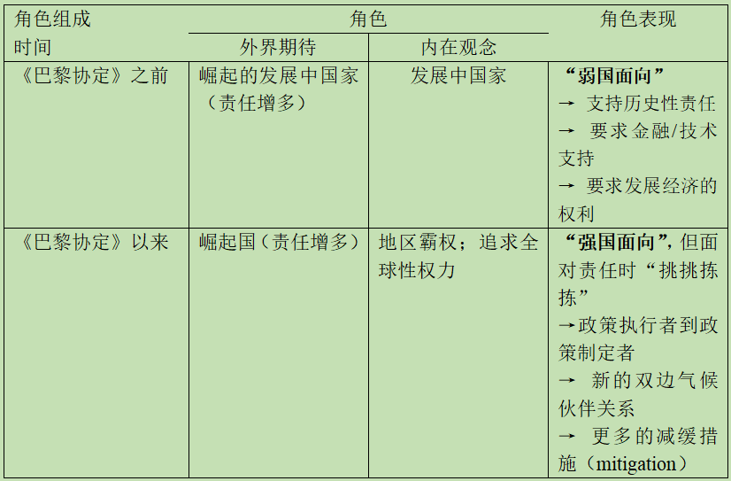
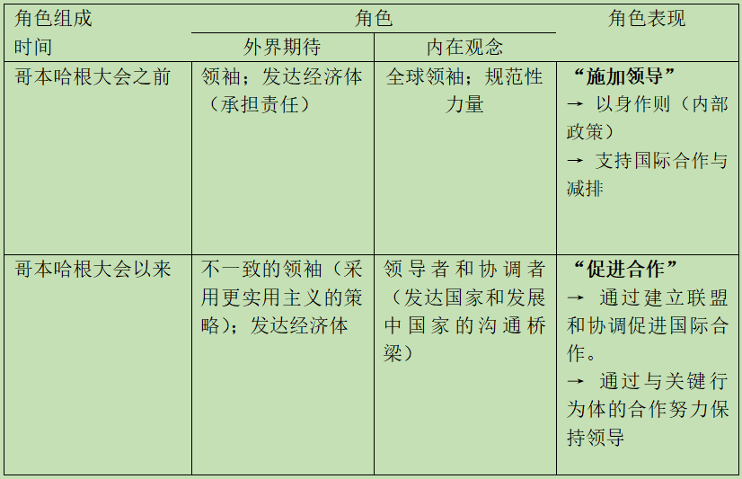
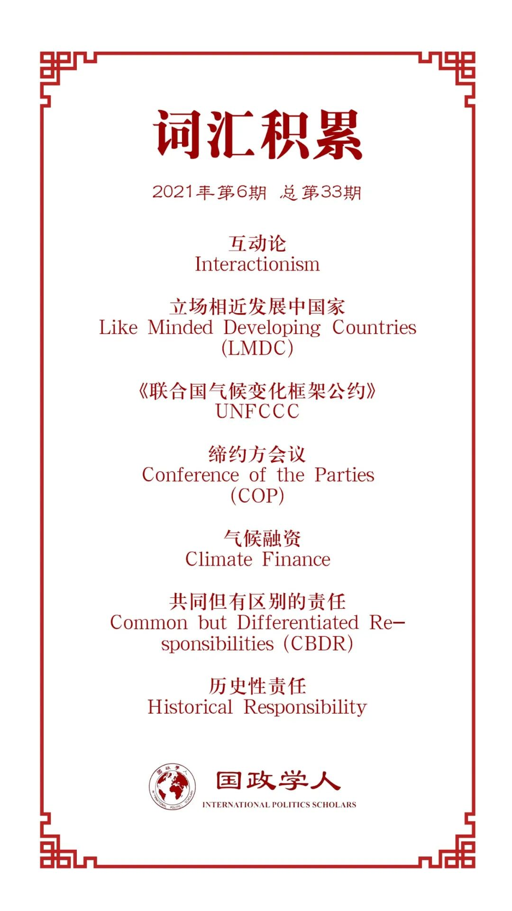

收录于合集

作品简介
【作者】 Julia Gurol，德国弗莱堡大学（University of Freiburg）国际关系讲席博士后研究员兼讲师。主要研究兴趣包括全球南方治理、跨区域威权实践、社会运动等，主要关注区域是中国和中东。
Anna Starkmann，弗莱堡大学多层治理（Multi-Level Governance）讲席助理研究员，研究兴趣包括环境和气候治理、比较区域主义以及环境和气候政治中的地区性组织研究等。
【编译】 陈勇（国政学人编译员，北京大学国际关系学院）
【校对】 姚博闻
【审核】 何伊楠
【排版】 余姣
【美编 】李九阳
【来源】 Julia Gurol, Anna Starkmann: “New Partners for the Planet? The European Union and China in International Climate Governance from a Role‐Theoretical Perspective,” JCMS , Vol.59. No.3, 2021, pp.518–534.
【归档】 《国际关系前沿》2021年第6期，总第33期。
期刊简介
《共同市场研究杂志》（ Journal of Common Market Studies ）主要发表关于欧洲和区域比较研究方面的创新性的同行评议成果。杂志致力于构建跨学科平台，欢迎社会科学范围内的多种方法和理论路径的文章，涵盖国际关系、政治学、政治经济学、经济学、法律和社会学等领域。2019年影响因子为2.543，在91份国际关系期刊中排名第13位。
新地球伙伴？从角色理论视角考察 全球气候治理中的中国和欧盟
New Partners for the Planet?
The European Union and China in International Climate Governance from a Role Theoretical Perspective
Julia Gurol
Anna Starkmann
推荐语
为什么中欧在不时发生政治摩擦，双边关系起伏不定的情况下可以在气候领域不断深化合作？本文试图利用“角色”理论来进行解答。这种分析视角或许也有助于探讨中国和其他大国竞争与合作并存的复杂关系。
内容提要
三个最大排放者欧盟、中国和美国的联合是2015年《巴黎协定》得以通过的原因。美国宣布退出后，中国和欧盟的相互依赖显著增强。双方都重申了执行《巴黎协定》，合作应对气候变化的意愿。作者认为，在中欧关系处于政治紧张的局面时，气候治理的合作令人困惑。本文从角色理论的角度，试图回答以下问题：外界和内在期望赋予了欧盟和中国不断变化的角色，如何解释双方日益加强的气候合作？文章采用了定性文本分析法，对政策文件和专家访谈等材料展开研究。在欧盟和中国关系日益紧张的背景下，论文最后对研究结果进行了讨论。
文章导读
01
引言
2017年，美国宣布退出《巴黎协定》，造成了领导权真空，促使让欧盟和中国填补这一空缺的期待有所上升。在美国退出的情况下，这两大碳排放行为体重申了执行《巴黎协定》的意愿，并进一步加强合作。本文试图回答的问题是：欧盟和中国角色的变化如何解释中欧气候合作的演变？作者认为，欧盟与中国之间的合作在双方角色和角色表现趋于一致时出现并加强，在角色分化时衰退。
02
欧盟与中国在气候
和环境方面的合作
文章开篇，作者首先梳理了中国和欧盟在气候与环境领域的合作事实。作者认为，中欧的合作处于多边主义和双边主义的交叉点。双方作为多边气候（治理）体系的一分子进行合作，而气候问题也是更广泛的中欧双边伙伴关系的一部分。
双边层面，气候合作自2004年始就已成为整体合作框架中的一个关键议题。初期的一个里程碑是2005年达成的“气候变化联合宣言”（Joint Declaration on Climate Change）。此后，中欧的气候伙伴关系不断扩展。随着时间的推移，合作已经从欧盟的发展援助演变为以行动为导向的伙伴关系（Europe–China Clean Energy Centre, 2015）。
多边层面，特别是在《联合国气候变化框架公约》（UNFCCC）下，欧盟和中国是决定性的参与者。在出台《京都议定书》的前几年，中欧展开了密切合作。虽然2009年的哥本哈根气候大会对中欧伙伴关系构成了挑战，但2015年巴黎气候大会谈判成功也和中欧的密切联系有关（Schreurs, 2016）。2017年美国退出《巴黎协定》助推了中欧的伙伴关系，中国、欧盟和加拿大迅速试图建立一个新的联盟来挽救该协定（Dröge and Rattani, 2018）。各方重申对《巴黎协定》的承诺，决定加强在气候变化和清洁能源方面的合作（European Commission, 2018）。
03
国际关系中的角色理论
如何理解中欧不断加强的气候合作？在此之前，作者先介绍了文章采用的理论视角——角色理论，以及研究的数据和方法。
“角色”（Roles）指的是“符合预期的适当的行为模式”（Bengtsson and Elgström, 2012, p. 94）。霍尔斯蒂（Holsti）是最早将角色理论应用于外交研究的学者（Holsti, 1970）。而在温特（Wendt）等建构主义者的研究中，角色不仅与国家的自我信念相关，还基于国家对他者的信念。作者认为，在角色的“自我维度”（ego dimension）和“他者维度（alter dimension）”（Jonnson and Westerlund, 1982）的研究基础上，主流的角色理论路径包括三种要素：① 内在角色观念（internal role conceptions），即行为体的自我认知是有关国家在国际体系中的位置，以及相应的恰当行为的认识（自我维度）。② 外界的角色期望（external role expectations），也叫角色规定（role prescriptions），是行为体对其他国家以及国际体系的结构特征的要求（他者维度）。③ 角色表现（role performance），即国家实际的外交政策行为（Walker, 1987; Harnisch，2011; Nabers，2011; Thies and Breuning, 2012; He and Walker，2015）。角色理论的中心论点之一是，大多数国家不仅拥有一种角色，而且可以拥有多种（互补或冲突的）角色，国家可以在不同的政策领域中拥有特定的角色（Breuning, 2011)。
除了可以同时存在多个角色外，单个角色本身也是不稳定和可变化的。除了渐进的发展，角色冲突也会导致角色发生显著变化。角色冲突的可能来源包括：自我观念和外界期望之间的不匹配、不同自我观念之间的差异，角色不明确和模糊，以及危机或其他关键事件等。也有学者研究了角色变化的不同模式和机制。哈尼施（Harnisch）将“角色调适”（role adaptation）与其他不同类型的角色变化区分开来。前者指的是在角色观念不变的情况下，角色表现的策略和手段发生了变化，而其他类型的角色变化则包含了角色观念的改变。角色变化的机制包括学习、规范说服和社会化（Harnisch, 2011; Michalski and Pan, 2017），其中后两者反映了角色理论的互动论视角（interactionism），互动不仅能改变角色观念，还能影响外界期望。在此基础上，作者强调（行为体的）互动与角色和角色表现是相互强化的。
因此，文章在运用角色理论进行分析时，重点关注的是角色动态（role dynamics）如何解释合作的进化，以及行为体角色和角色表现的变化如何改变合作的前景。作者将合作理解为一种互动，当国家对彼此的角色概念和期望相匹配时，国家通过采取合作步骤来履行它们的角色。当角色和角色表现变得更加一致时，合作就会出现和加强；当角色出现分歧时，合作就会减弱。
在研究数据和方法方面，作者主要运用了文本分析法，研究访谈材料、学术文章，以及2005年至2019年3月中欧在总体和气候变化领域的政策文件、联合声明等。此外，作者还对欧盟委员会、欧洲议会和驻华代表团（Delegation to China）的利益相关方以及中国的学术和政策专家等进行了16次访谈，以此作为文献资料的补充。
04
欧盟与中国的角色、
角色表现与合作
文章的第四部分介绍了中国和欧盟各自的角色，以及随着时间推移而产生的角色发展，并探究了中欧的角色表现及其对合作的影响。
作者认为，中欧角色转变的关键时点分别是巴黎气候大会和哥本哈根大会。文章对中欧自身的角色观念、他者的角色期待，以及具体的角色表现——气候变化领域的行动分别可总结如下（结合原文表格和具体表述）：
Ⅰ 中国在气候治理中的角色和角色表现：

Ⅱ 欧盟在气候治理中的角色和角色表现：

梳理中欧各自的角色及其变化后，文章结合文本分析的结果，研究了角色观念与中欧在气候治理领域的互动的关系。气候政策领域的合作受制于中欧的整体关系。在很长一段时间内，中欧在国际气候治理体系中的角色完全相反。当欧盟认为自己是领袖，试图“以身作则”时，中国将自己界定为新兴经济体，认为自己拥有“发展的权利”。尽管如此，双方还是在2005年通过了关于气候变化的共同宣言，开启了气候问题的双边合作伙伴关系。通过文本分析，作者得出了以下几点论断：
首先，一些气候领域的相关议题越来越受到重视，双方也都各自强调己方在应对这些问题时的关键作用。新近的文件中关注的气候议题更加广泛，包括有关减排措施、为第三国（发展中国家）提供气候融资（climate finance）或制定适应性措施等内容。而有些议题自合作初始阶段便是主要内容，近期的文件亦有涉及，例如中欧气候合作中的经济因素，包括相关的市场机制（特别是排放交易）和能源安全等。
其次，气候变化领域的规范色彩越来越突出，中国和欧盟也更加充分地认识到自己所处的关键位置。美国的退出给了中欧填补空缺和调整各自角色表现的机会。欧盟接过了美国的角色，但尝试以一种不同的方式进行合作——与中国分担应对气候变化的责任。中国也逐渐调整了自己的角色观念，在气候政治中扮演大国和关键行动者的角色，因而也符合了外部的角色预期，即主要经济体和最大的排放国之一。尽管如此，欧盟仍对中国能否履行承诺和承担领导国责任存有怀疑。
再次，共同文件中体现了双方对于某些原则的理解，反映出双方在哪些原则更重要、以及哪些原则可以认同等问题上的认识，表现了各自的角色观念。欧盟强调多边主义和基于规则和制度的国际合作，反映出其作为多边主义行为体的角色。就有关中欧互动的表述来看，中国接受了欧盟对国际合作的理解，但也有学者认为欧盟主张的多边主义是一种外交政策概念，而中国的主流观点则是强调一个多极的世界秩序（Jørgensen and Wong, 2016）。另一个原则是“共同但有区别的责任”（Common but Differentiated Responsibilities）。中国认为自己是发展中国家和新兴经济体，不应承担与欧盟相当的责任。
05
结论
总而言之，中欧在气候变化问题上的合作从能源、技术议题逐渐拓展，如今已成为旨在形塑全球气候政治的伙伴关系。这反映出双方都认识到自己在国际体系中的重要地位，并都有决心和意愿成为解决气候问题的领导者。随着角色的趋近，中欧合作不断深化，2015-2018年的文件表现了双方的合作努力。
为什么中欧合作能够深化？作者认为三个关键时点上的角色变化发挥了重要作用。第一个关键节点是2009年的哥本哈根气候大会，欧盟在此过程中实行了角色调适，通过承担沟通桥梁的责任对其领导者的角色进行补充。第二个关键节点是《巴黎协定》的签署，中国的角色变化，从政策执行者甚至是反对者转变为气候变化中的积极行动者，使《协定》成功成为可能。第三个关键节点是美国退出《巴黎协定》，美国留下的领导权真空为中欧调整各自在国际气候治理体系中的地位创造了机会，也促进了双方合作。
译者评述
本文借用角色理论来分析中欧气候合作的演变，认为中国和欧盟在国际气候治理中的角色变化，尤其是日益趋近的角色观念是双方合作深化的原因。
文章采用的角色理论在社会科学中已有广泛讨论。早在20世纪20和30年代，“角色”这一概念就已在人类学、心理学和社会学领域有大量分析，并且在一些研究中被视为核心概念。[1] 角色理论的基本观点是个体的行为受到社会身份和情境的制约，但不同理论对于“制约因素”的认识有所不同。布鲁斯·贝特尔（B. J. Biddle）区分了“角色”的五种研究路径：功能主义（Functional）、符号互动论（Symbolic Interactionist）、结构主义（Structural）、组织路径（Organizational）和认知论（Cognitive）。结构主义、功能主义和组织路径的基本共同点是强调“结构”的重要性，认为行为体在社会体系中所处的位置会对其行动产生影响。“角色”源于地位和与之相关的规范性要求。符号互动论和认知理论则侧重于研究行为体因素。符号互动论者往往认为角色的形成和发展来源于社会互动，与行为体对自身和他者行动的诠释和理解相关。也有学者分析美国和欧洲学者的不同，指出美国的角色理论强调角色的物质或认知属性，相对固定的角色是行动的原因（cause for action）。欧洲学者是建构主义路径，关注语言和社会互动的影响，认为“角色”提供了行动的理由（reasons for action）。[2]
与其他领域的研究相似，角色理论在国际关系的研究中是一种探讨结构与能动性问题（Structure-Agency Problem）的研究范式。[3] 在研究主题方面，除了理论探讨和综述类文章外，研究者的主要关切是角色观念如何影响国家行为，中国、俄罗斯、美国和欧盟等都是重要的研究对象。[4] 近年也有部分研究以角色理论的视角分析中欧关系的变化。例如，本文多次提到米查尔斯基和潘忠岐的文章即利用角色理论分析了中欧“战略伙伴关系”（strategic partnership）的演变（Michalski and Pan, 2017）。[5] 在分析方法和材料选择方面，国际关系领域的角色研究普遍使用文本分析法，或采取“精英路线”，从决策者的演讲、声明和报告中归纳对国家角色的表述，或运用“大众路线”，即通过民意调查、访谈等大样本分析，提炼一国的国家角色定位。[6] 本文主要沿袭了霍尔斯蒂开创的“精英路线”，从官方文件和重要人物的访谈中摘取有关角色观念的表述，再通过比较不同时段的表述勾勒出角色观念的变化情况。译者认为，文章似乎应在此基础上拓展材料的来源，例如更多地分析双方决策层在双边和多边场合的演讲或其他具体表态。虽然公开表述的话语可能具有欺骗性，但也可作为政策文件的参考和补充，或许能够揭示同一时期角色观念的多样性，以及不同时期角色观念变化的复杂性。
就文章观点来看，作者试图说明中欧在气候治理领域角色观念或角色表现的转变影响了双方在这一领域互动。但考虑到双方在其他议题上的角色可能与气候领域不同，角色之间相互影响或许应该成为考察的对象。例如，文中提到，中欧在气候议题上的角色观念的趋近是合作深化的主因，但尽管中国的角色观念已经发生了转变，越来越多地承担起大国的责任，欧盟内部对中国仍有批评的声音。这是否预示着，其他领域，如中欧在“战略伙伴关系”的整体层面，或在地缘政治和某些具体问题上的角色差异对气候合作造成了一些负面影响？如作者在结论部分所言，文章忽视了经济和地缘因素对角色观念的影响，之后的研究或许能由此深入。另一个可以拓展的方向是欧盟成员国，尤其是主要成员国在与中国互动过程中形成的角色观念，对于中欧整体的合作和角色观的演变有怎样的作用？作者在结论中也提到，文章将欧盟视为单一的行为体，但实际上成员国对中国的态度存在较大差异，有的建立了紧密的联系，然而有些对与中国的合作持怀疑态度。欧盟在其他议题，比如“一带一路”倡议上的态度就受到成员国观念差异的影响。中欧气候合作中是否也存在类似的效应？未来也可以进一步探讨。
参考文献
[1] Biddle B J. Recent developments in role theory[J]. Annual review of sociology , 1986, 12(1): 67-92.
[2] Harnisch, Sebastian, Cornelia Frank, and Hanns W. Maull, eds. Role theory in international relations[M]. Taylor & Francis, 2011, p.7.
[3] Thies C.G.& Breuning M. Integrating Foreign Policy Analysis and International Relations through Role Theory[J]. Foreign Policy Analysis ，2012-8, p.1-4.
[4] 例如：Le Prestre, Philippe G., ed. Role quests in the post-cold war era: foreign policies in transition[M]. McGill-Queen’s Press-MQUP, 1997; 张清敏.中国的国家特性、国家角色和外交政策思考[J].太平洋学报,2004(02):47-55; Harnisch, Sebastian, Cornelia Frank, and Hanns W. Maull, eds. Role theory in international relations[M]. Taylor & Francis, 2011；McCourt D M. Role-playing and identity affirmation in international politics: Britain’s reinvasion of the Falklands, 1982[J]. Review of International Studies , 2011: 1599-1621；徐博,威廉·瑞辛格.国际关系角色理论视角下俄罗斯对中国能源外交决策探析[J].东北亚论坛,2019,28(04):98-111+128. 国内学者的梳理可参考：庞珣.国际角色的定义和变化———一种动态分析框架的建立[J].国际政治研究,2006(01):133-143；袁伟华.对外政策分析中的角色理论:概念解释机制与中国—东盟关系的案例[J].当代亚太,2013(01):125-156.
[5] Michalski A, Pan Z. Role dynamics in a structured relationship: the EU–China strategic partnership[J]. JCMS: Journal of Common Market Studies , 2017, 55(3): 611-627.
[6] 袁伟华.对外政策分析中的角色理论:概念解释机制与中国—东盟关系的案例[J].当代亚太,2013(01):125-156.
词汇整理

- ** I** ** nteractionism** ：互动论
例句: Referring to persuasion and socialization reflects an interactionist perspective on role theory. Recent literature has highlighted the significance of interactionism, a concept based on the work of social psychologist George Herbert Mead to understand role formation and change (Klose, 2018).
- _ Like Minded Developing Countries，LMDC_ ：立场相近发展中国家
例句：During the 2017 COP, China fell back to old habits of adapting the dominant narrative of developing countries like the group of Like‐Minded Developing Countries on Climate Change (LMDC) and the G77 group, claiming more financial support to implement the PA (Dröge and Rattani, 2018)..
- ** UNFCCC** ：《联合国气候变化框架公约》
例句：The EU was a key player in setting up the UNFCCC (1992) and the negotiation of the Kyoto Protocol (1997) in the earlier years of international climate politics (Oberthür and Groen, 2017).
- ** Conference of the Parties，** ** COP** ：缔约方会议
例句：Although the EU and China intensified their cooperation efforts in the early 2000s, the 2009 Conference of the Parties (COP) in Copenhagen challenged the emerging EU–China partnership.
- ** Climate finance** ：气候融资
例句：The 2015 joint statement published before the Paris COP, and the 2018 statement reflect more general issues discussed in the international climate system, namely mitigation and emission reduction options, adaptation measures or climate finance for third (developing) countries among others.
- ** Common but Differentiated Responsibilities,** ** CBDR** ：共同但有区别的责任
例句：Thereby China refers to the principle of common but differentiated responsibilities, a concept written down in the 1992 Framework Convention. China was one of the major players establishing this principle and reiterating it in UNFCCC negotiations, while the EU initially accepted it as means to relieve pressure from developing countries, but also expected that developing countries eventually have to cut emissions in the future (Yan and Torney, 2016).
- ** Historical responsibility** ：历史性责任
例句：From this perspective, the US, Europe, Japan, Australia and other highly developed countries have the historical responsibility for climate change and should provide financial support for mitigation and adaptation efforts in developing countries.
文章观点不代表本平台观点，本平台评译分享的文章均出于专业学习之用, 不以任何盈利为目的，内容主要呈现对原文的介绍，原文内容请通过各高校购买的数据库自行下载。
好好学习，天天“在看”
国政学人
支持学术公益与知识传播
微信扫一扫赞赏作者 __赞赏
已喜欢，对作者说句悄悄话
取消 __
发送给作者
发送
最多40字，当前共字
上一页 1/3 下一页
长按二维码向我转账
支持学术公益与知识传播
受苹果公司新规定影响，微信 iOS 版的赞赏功能被关闭，可通过二维码转账支持公众号。